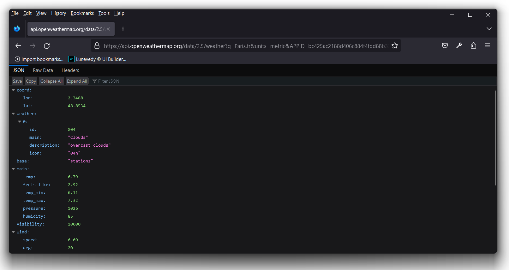
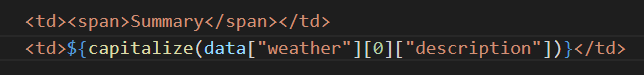

Project Description
Uses the Fetch API to retrieve current weather information for the city of Dublin, Ireland.
You can view a completed version of the project here.
Your project folder
In your portfolio/js folder is a folder named weather that contains all the files you need for this JavaScript project.

In VS Code, open the project’s index.html web page and ensure the hyperlinks and personal details have been correctly updated.
Creating the table with JavaScript
Your first task is to write some JavaScript code that will create the <tbody> part of the table element in the provided web page. Here are the steps.
- In your portfolio/js/weather folder are the following two files: index.html and app.js Open both files in VS Code or other editor.
- In the index.html file, you can see a static HTML table with a <tbody> element. But the <tbody> has no <tr> rows and <td> cells.
You will generate these rows and cells with JavaScript.
At the bottom of the index.html web page, just before the closing </body> tag, you can see that it is linked to the app.js file.
When you display the index.html web page in a browser, table element currently looks as shown below.

- In the app.js file, add the following function.
This function creates four table rows with two cells inside each row.function populateTableRows() { let strTableRows = `<tr> <td><span>Summary</span></td> <td>Row 1, Cell 2</td> </tr> <tr> <td><span>Temperature</span></td> <td>Row 2, Cell 2</td> </tr> <tr> <td><span>Humidity</span></td> <td>Row 3, Cell 2</td> </tr> <tr> <td><span>Pressure</span></td> <td>Row 4, Cell 2</td> </tr>`; } - Just before the end of the populateTableRows() function, before the closing curly brace }, add the new line shown below. This assigns the content of the strTableRows string variable to the table rows in the web page.
- Save your app.js file and reload your index.html web page,
You can see that the web page has not been updated. That is because you have not yet called the populateTableRows() function in app.js.
Running the function when the web page loads
You want your populateTableRows() function to run as soon as the web page loads. You have two options.
Immediately-invoked Function Expression (IIFE)
In JavaScript an IIFE (pronounced iffy) is a function that runs without needing to be invoked or called from elsewhere in the program. It has the following syntax.
(function doSomething() {
/* function body */
})()
Note that:
- The entire function is enclosed within parentheseis ( ).
- At the end, after the closing parentheseis ) is a pair of parentheseis ().
IIFEs are very useful because they enable code to be run immediately - but do not add variables to the global object.
Transform your populateTableRows() function into an IIFE as shown below.

Save your app.js file and reload the index.html in your web browser. The code should now run and the table rows should be created.
In JavaScript an IIFE (pronounced iffy) is a function that runs without needing to be invoked or called from elsewhere in the program. It has the following syntax.
(function doSomething() {
/* function body */
})()
Note that:
- The entire function is enclosed within parentheseis ( ).
- At the end, after the closing parentheseis ) is a pair of parentheseis ().
IIFEs are very useful because they enable code to be run immediately - but do not add variables to the global object.
Transform your populateTableRows() function into an IIFE as shown below.
Save your app.js file and reload the index.html in your web browser. The code should now run and the table rows should be created. See the screenshot below.
Adding an event listener to the web page
A second option for running a JavaScript function when a web page loads is to add an event listener for the web page. The syntax is as follows.
document.addEventListener("DOMContentLoaded", doSomething);
Just in case the DOMContentLoaded event fires before your script has a chance to run, it is wise to check before adding the listener. See below.
if (document.readyState === "loading") {
// Loading hasn't finished yet
document.addEventListener("DOMContentLoaded", doSomething);
} else {
// DOMContentLoaded has already fired
doSomething();
}Try this second option by removing the IIFE syntax from your populateTableRows() function and adding the following before it at the top of the app.js file.
if (document.readyState === "loading") {
// Loading hasn't finished yet
document.addEventListener("DOMContentLoaded", populateTableRows);
} else {
// DOMContentLoaded has already fired
populateTableRows();
}Save your app.js file and reload the index.html in your web browser. Once again, the code should now run and the table rows should be created.
Exploring the Open Weather API
A public API from Open Weather provides access to current weather data for any location on Earth including over 200,000 cities. The data is frequently updated based on the global and local weather models, satellites, radars and a vast network of weather stations.
Let's try it out.
- Open a new tab in your web browser and enter the following web address with an API end-point.
https://api.openweathermap.org/data/2.5/weather?q=Paris,fr&units=metric&APPID=bc425ac2188d406c884f4fdd88b339f0
Your web browser should display a screen similar to the following.  You can see that the link contains a city name Paris and a country code fr. These two parameters are not case-sensitive. For example, you could enter them as paris and a FR. See below.https://api.openweathermap.org/data/2.5/weather?q=paris,FR&units=metric&APPID=bc425ac2188d406c884f4fdd88b339f0
- Here is the current weather in London in the UK.
https://api.openweathermap.org/data/2.5/weather?q=london,uk&units=metric&APPID=bc425ac2188d406c884f4fdd88b339f0
- And here is the current weather in New York in the US. Note the + character to join the two words New and York.
https://api.openweathermap.org/data/2.5/weather?q=new+york,us&units=metric&APPID=bc425ac2188d406c884f4fdd88b339f0
The API requires a key for access. You can obtain one for free at this link: Subscribe for API.
The API provides a wide range of data items. In this project, we will use the following four.
Using the Fetch API
The JavaScript Fetch API has the following general syntax. In the example below, the feed data is provided in JSON format.
async function fetchSomeData() {
await fetch('https://apinnnnn.com/folders/parameters')
.then(response => {
if (response.status !== 200) {
console.log('Error Status Code: ' + response.status);
return;
}
response.json().then((data) => {
// Extract data from feed and display in web page
});
})
.catch(error => {
// handle any error
});
}
Follow these steps to add the Fetch API to your JavaScript code.
- In the app.js file, update the populateTableRows() function as follows.
async function populatetableRows() { await fetch('https://api.openweathermap.org/data/2.5/weather?q=dublin,ie&units=metric&APPID=bc425ac2188d406c884f4fdd88b339f0') .then(response => { if (response.status !== 200) { console.log('Error Status Code: ' + response.status); return; } response.json().then((data) => { // Test if data is being received console.log(data); let strTableRows = `<tr> <td><span>Summary</span></td> <td>Row 1, Cell 2</td> </tr> <tr> <td><span>Temperature</span></td> <td>Row 2, Cell 2</td> </tr> <tr> <td><span>Humidity</span></td> <td>Row 3, Cell 2</td> </tr> <tr> <td><span>Pressure</span></td> <td>Row 4, Cell 2</td> </tr>`; document.querySelector("#table-weather-dublin tbody").innerHTML = strTableRows; }); }) .catch(error => { // handle any error }); } - Save your app.js script and view the web page in your browser. It should look as shown before.
- Open your browser console and verify that the data is being obtained in JSON format from the weather feed.

- In the JavaScript code, update the four table cells as follows.
<tr> <td><span>Summary</span></td> <td>${data["weather"][0]["description"]}</td> </tr><tr> <td><span>Temperature</span></td> <td>${data["main"]["temp"] + "°C"}</td> </tr><tr> <td><span>Humidity</span></td> <td>${data["main"]["humidity"] + " %"}</td> </tr>
You can now remove the console.log statement.<tr> <td><span>Pressure</span></td> <td>${data["main"]["pressure"] + " Pa"}</td> </tr> - Just before the populateTableRows() function the app.js file, add this new arrow function.
capitalize = s => s && s[0].toUpperCase() + s.slice(1) - Apply this function to the first item of weather data as follows. 
Save your app.js script, view the web page in your browser and verify the page works correctly.
Updating the background image
As a final step, add the following function to app.js that will change the background image according to the time of day.
function change_background() {
let d = new Date();
let n = d.getHours();
if (n > 23 || n <= 6) {
document.querySelector(".theme-js").style.backgroundImage ="url('assets/img/dublin-night.jpg')";
} else {
document.querySelector(".theme-js").style.backgroundImage ="url('assets/img/dublin-day.jpg')";
}
}
change_background();Uploading your project to GitHub
Upload the weather folder as a sub-folder of the portfolio/js folder on your GitHub account.